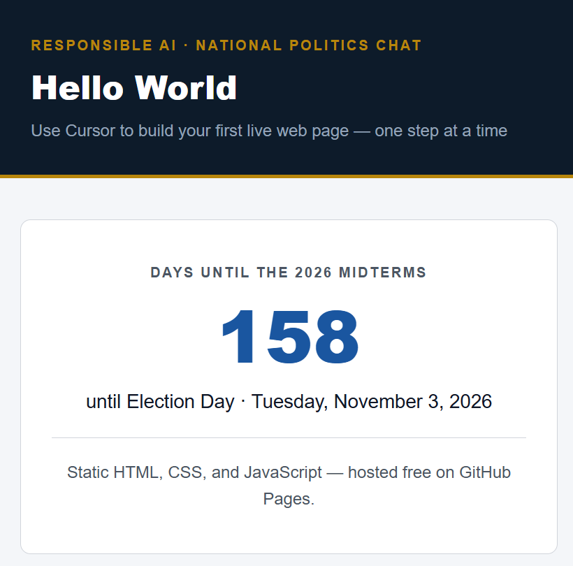

Why purpose matters
“Hello World” is not just text on a screen — it is proof that your tools work and that you can ship something real. A clear purpose keeps you focused when Cursor suggests extra features you do not need yet.
Our purpose for this series
We are building a live web page that shows how many days remain until the November 3, 2026 midterm elections. Anyone can open the link in a browser — no app to install.
See the working example on the home page: nbk5876.github.io/hello-world/

Keep version 1 simple
For the first version, we use only:
- HTML — structure and content
- CSS — layout and readability
- JavaScript — update the day count automatically
That is static — no server code running when someone visits the page. Hosting is free on GitHub Pages.
What you will build vs. this site
You build: one landing page with the countdown (a few files).
This site also has: lesson reference pages like the one you are reading now — for the NextDoor series. You read them; you do not need to copy all twelve pages.
What we are not building (yet)
These are fine ideas for later — not for version 1:
- User accounts or sign-in
- A database (for example PostgreSQL)
- Python on a server (for example Render)
- Email reminders or custom domains
If you outgrow static pages, you can add a backend later — the same pattern many production apps use: static site for the public page, server only when you need it.
Your turn
Following along? Adopt the same purpose: a midterm countdown page. Or pick another small, dated, public goal (a birthday countdown, days until an event). Write one sentence describing your page before you ask Cursor to code — it helps you stay in charge.